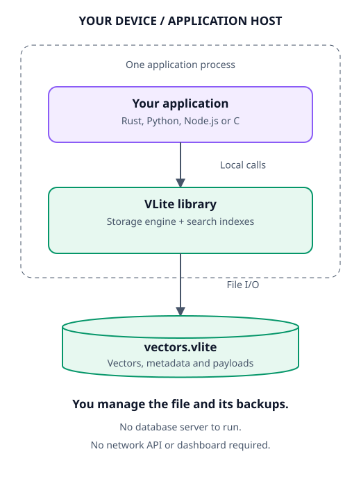

Embedded
Your app opens the file

Add the library to your app. There is no separate service.
Embedded example →Embed vector search in your app, or self-host it behind REST and gRPC.
Embed it in Python, Node.js or Rust, or run the server and dashboard.
# Python 3.11+; run in a fresh directory # python -m pip install vlite-embedded==0.4.1 from vlite_embedded import NativeLibrary native = NativeLibrary() with native.create("documents.vlite", dimensions=3) as db: db.put("10", [1, 0, 0]) print(db.search([0.9, 0.1, 0], 5))
// npm install ./vlite-embedded-0.4.1-<platform>.tgz (release tarball) import { NativeLibrary } from "@vlite/embedded"; const native = new NativeLibrary(); try { const db = await native.create("documents.vlite", 3); await db.put("10", [1, 0, 0]); console.log(await db.search([0.9, 0.1, 0], 5)); } finally { await native.close(); }
// Cargo.toml: vlite = { git = "https://github.com/mahpate/Vlite", tag = "v0.4.1" } use vlite::Database; fn main() -> vlite::Result<()> { let mut db = Database::create("vectors.vlite", 3)?; db.put(10, &[1.0, 0.0, 0.0], b"document A")?; let hits = db.search(&[0.9, 0.1, 0.0], 5)?; assert_eq!(hits[0].id, 10); db.close() }
# Ubuntu 22.04 or 24.04. On Windows, use the Windows devbox tab. sudo apt-get update && sudo apt-get install -y git git clone https://github.com/mahpate/Vlite && cd Vlite sudo sh scripts/docker-dashboard.sh # Offers to install Docker, then starts the published images. # Dashboard: http://127.0.0.1:8081 API: http://127.0.0.1:18084 # First sign-in: run the printed token command, choose "Use an access token # instead" and paste the token. Then create your account in Users → Add user.
# Windows 10 (build 19041+) or Windows 11; open PowerShell. Invoke-WebRequest https://raw.githubusercontent.com/mahpate/Vlite/main/scripts/devbox.ps1 -OutFile devbox.ps1 powershell -NoProfile -ExecutionPolicy Bypass -File .\devbox.ps1 # If Windows asks you to restart, restart and run it again. powershell -NoProfile -ExecutionPolicy Bypass -File .\devbox.ps1 -Token # Copies the admin token to the clipboard for your first sign-in. # Dashboard: http://127.0.0.1:8082 API: http://127.0.0.1:18085
Bring your own embeddings. See the API examples and installation guide.
Browse records, run searches and manage access from your browser.

Dense, sparse and hybrid search with durable commits.
Explore the engine →In your app, or as a server you run. Either way, the data stays in your file.
Checksummed, synced writes. Atomic batches of up to 4,096 operations.
Storage contract →Dense and sparse vectors, typed filters and BM25 hybrid ranking.
Retrieval guide →HNSW with snapshots, u8 quantization and metadata indexes.
Index lifecycle →Collections, expiry, resumable imports, point-in-time restore and change feeds.
Storage features →Dashboard accounts with roles, scoped API keys, quotas, TLS and encryption at rest.
Security guide →Metrics, optional tracing, backups and a live log tail.
Operations guide →Corruption fails closed. Committed data is never silently discarded. Indexes rebuild from stored records.
Limits: the live dataset is held in memory, so size machines for it. A file has one writer or several read-only readers. Durability depends on your filesystem.